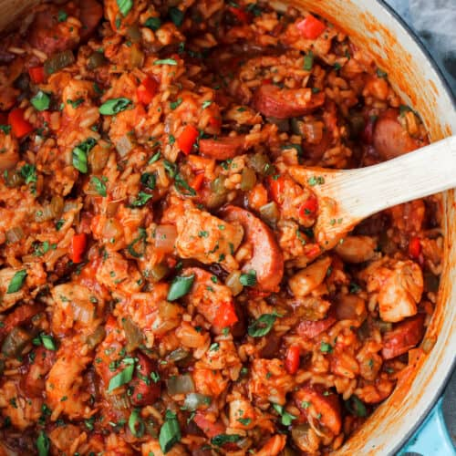

Jambalaya

Description
While true jambalaya is really more of a thicker rice stew than a soup,
it's one of those dishes that more stock can be added to easily make it
into a soup recipe. Serve garnished with green onion.
Ingredients
- 2 tablespoons butter
- 8 ounces andouille sausage, cut into 1/4-inch slices
- 2 tablespoons ground paprika
- 1 tablespoon ground cumin
- ½ teaspoon cayenne pepper
- ½ cup diced tomatoes
- 1 large green bell pepper, diced
- 2 stalks celery, sliced 1/4 inch thick
- 4 green onions, thinly sliced
- 1 teaspoon salt
- 1 bay leaf
- 1 cup uncooked brown rice
- 3 cups chicken stock
- 1 pound large shrimp, peeled and deveined
- salt and ground black pepper to taste
Steps
- Place butter and sausage in a large stockpot over medium heat;
cook and stir for 5-6 minutes until sausage begins to brown.
- Stir in paprika, cumin and cayenne; cook for 1 minute.
- Stir tomatoes, celery, green pepper, green onions, salt, and bay
leaf into sausage mixture.
- Add brown rice and stir to combine. Stir in chicken stock and turn
heat to low. Cover and cook for until rice is just tender, about
45 minutes.
- Stir in shrimp, replace lid and cook for 5 minutes. Season with
salt and black pepper.